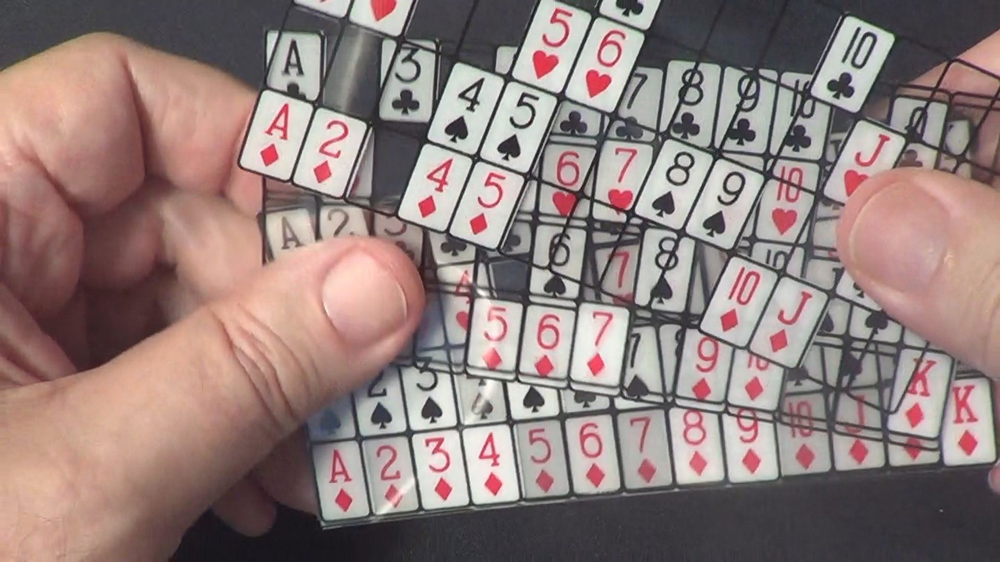
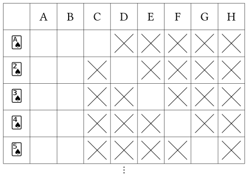
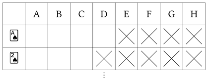

Computer mind reading card
A while ago, my sister came back from her school’s magic club and showed me an interesting game. I don’t know its official name. I have seen people call it the “computer mind reading card” or a “perspective card set.”

To distinguish it from poker cards, I call them tables in the following.
Let’s play first
To demonstrate how the game works, let’s first play it.
- Pick a card from a standard 52-card deck and keep it in mind.
- 8 tables in series will appear on the screen. Each time, simply click
yin the game, or pressyon your keyboard if you see your card, ornif you don’t. - Keep answering, and the game will guess your card in no time!
- You can always refresh the page to restart the game if you pressed the wrong button.
To play the game, WebGL2 support in your browser is required. The source code can be found in this blog’s repository. If you are unable to run it in your browser, you can try to build and run locally.
Did the game guess your card correctly? In theory, it always should.
Why it works?
Now, I will explain how the tables are designed, i.e., how we decide which card to put in which table, to make the game work.
Some people may first come up with this:
We have 52 cards in total. It is sufficient to represent each of
them by a combination of the 8 tables. For\[ \binom{8}{3} = 56 \geq 52. \]
That is indeed the key.
To ensure we are on the same page, \(\binom{8}{3}\) is the notation for 8 choose 3. Or, the count of combinations choosing \(3\) individual items from \(8\) individual items.
Why \(\binom{8}{3}\)?
Why do we arrange \(8\) tables, and choose \(3\) of them for a card? In fact, \(\binom{8}{3}\) is the minimal solution for \(n\) and \(k\) such that \[ \binom{n}{k} \geq 52. \]
Of course we want to get the answer as quickly as possible.
It is easier to see in this table:
| \(n\) | \(k\) | \(\binom{n}{k}\) |
|---|---|---|
| 1 | 1 | 1 |
| 2 | 1 | 2 |
| 3 | 1 | 3 |
| 4 | 1, 2 | 4, 6 |
| 5 | 1, 2 | 5, 10 |
| 6 | 1, 2, 3 | 6, 15, 20 |
| 7 | 1, 2, 3 | 7, 21, 35 |
| 8 | 1, 2, 3, 4 | 8, 28, 56, 70 |
…
What do we need?
As you may have realized, the way the game finds out your card is to overlay the three tables that do not contain your card. Then, the only missing card is the answer. Thus, let’s say, for the table combination that represents card “club A”, at least one of the three tables contains “club 2”, same for “club 3”, “club 4”, and all the other cards.
So we must design a layout that:
- A unique combination of tables is arranged for each 52 cards.
- That combination has only one hole of that card. i.e. There’s only one card that all the tables in the combination don’t contain.
The solution
If we choose the same number of tables representing each card, that ensures any other cards have at least one of the three tables containing it. (requirement 2) — If every card is absent from exactly three tables, then no two cards can share the same three absent tables. Therefore, for the three tables assigned to a card, every other card must appear in at least one of them. See Figure 2. Also, \(\binom{8}{3} \geq 52.\) (requirement 1)

Actually, requirement 2 is optional. That is, not choosing a fixed number of tables to represent each individual cards is also possible. You can still pick a set of tables and identify which card it represents. However, that may cause a representation to have multiple holes:

But of course we want to identify the answer more easily. So \(\binom{8}{3}\) is fine.